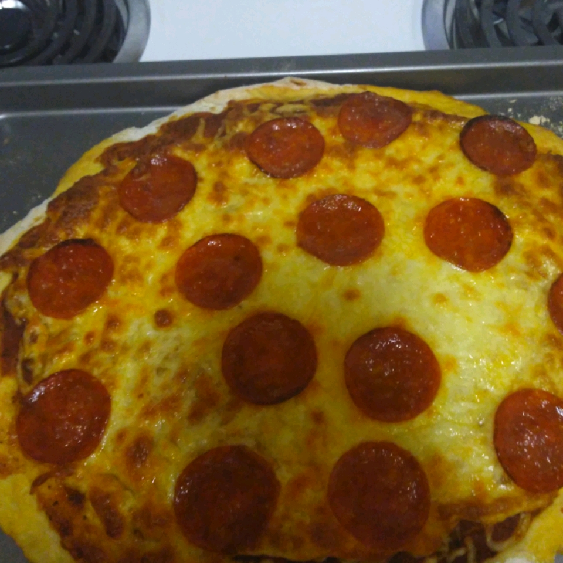

Brenda's Lasagna Recipe

Description
Quick, easy and delicious Homeade pizza crust and tomato sauce has never been easier and this recipe for pepperoni pizza produces a delicious classic!
Ingredients
Pizza Sauce
- 1/2 (12 ounce) can CONTADINA Tomato Paste
- 1 teaspoon dried oregano, crushed
- 1 teaspoon dried basil, crushed
- 1/2 teaspoon garlic powder
- 1/2 teaspoon onion powder
- 1/2 teaspoon sugar
- 1/2 teaspoon salt
- 1/4 teaspoon black pepper
Easy Pizza Crust
- 3 1/4 cups all-purpose flour, or more as needed
- 2 (.25 ounce) envelopes FLEISHMANN'S Pizza Crust Yeast or RapidRise Yeast
- 1 tablespoon sugar
- 1 1/2 teaspoons salt
- 1 1/3 cups very warm water (120 degrees F to 130 degrees F)
- 1/3 up oil
Toppings
- 1 (6 ounce) package HORMEL Pepperoni
- 1 cup shredded mozzarella cheese, or more to taste
Steps
- For sauce: Combine all sauce ingredients with 1/2 cup water in a medium bowl; set aside for flavors to develop while making crust. Freeze remaining paste .
- For crusts: Combine 2 cups of flour with the dry yeast, sugar and salt. Add the water and oil and mix until well blended (about 1 minute). Gradually add enough remaining flour slowly, until a soft, sticky dough ball is formed.
- Knead for about 4 minutes, on a floured surface, until dough is smooth and elastic. Add more flour, if needed. (If using RapidRise® Yeast, let dough rest, covered, for 10 minutes.)
- Divide dough in half. Pat each half (with floured hands) into a 12-inch greased pizza pan OR roll dough to fit pans.
- For pizzas: Preheat oven to 425 degrees F. Top crusts with sauce, pepperoni and cheese.
- Bake for 18 to 20 minutes until crusts are browned and cheese is bubbly. For best results, rotate pizza pans between top and bottom oven racks halfway through baking.